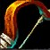

|
Capital: Orgrimmar Bautizada en honor al anterior jefe de guerra de la Horda, Orgrim Martillo Maldito, esta capital se construyó cuando los orcos se asentaron por primera vez en Durotar y se ha reforzado con el paso de los años. En las calles de la ciudad se alinean afiladas torres metálicas, y los estandartes rojos y negros de la Horda saludan desde cada poste. |
Montura racial: Lobo Los enormes lobos se convirtieron en los compañeros de los orcos y también en su medio de transporte preferido. Su carácter inquebrantable los hace adecuados para luchar contra grandes presas mientras llevan jinetes acorazados sobre el lomo. |
| Clases disponibles | Raciales |
|---|---|



|


|


|